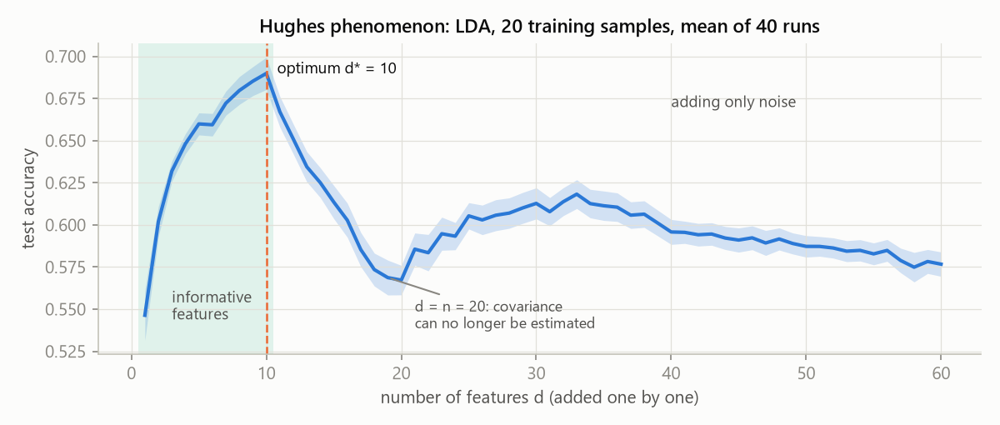
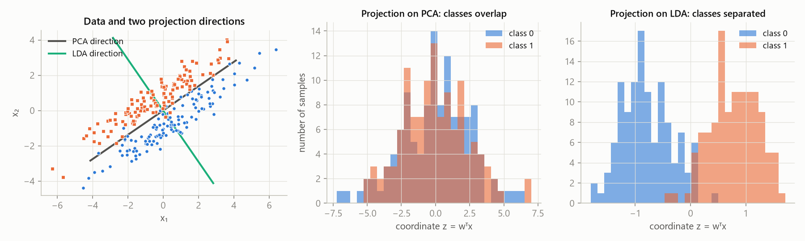
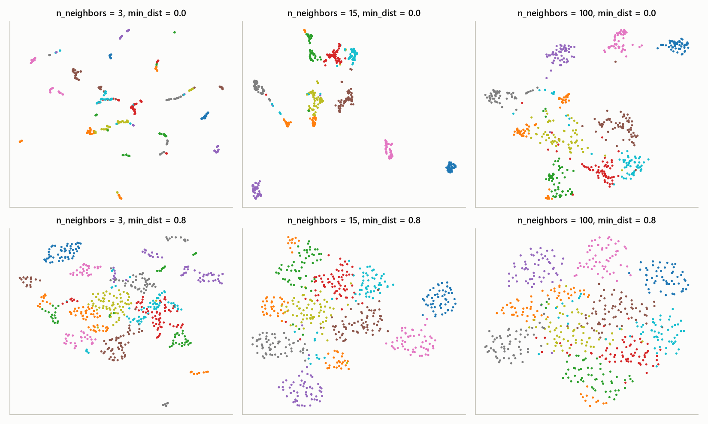

MLR – exam notes · Feature selection and dimensionality reduction – MLR · https://balnerm.github.io/pripravy/mlr/en/03_redukce.html
Lecture 3
Feature selection and dimensionality reduction
More features do not mean a better model. As the dimension grows the space becomes “sparse”, and with a limited number of samples, added features start to make performance worse. This chapter shows two ways to reduce the dimension: select a part of the original features (filters, wrappers, embedded methods), or create a smaller number of new ones (PCA, LDA, t-SNE, UMAP). At the end comes the kernel trick – an implicit feature expansion that lecture 4 builds on.
Curse of dimensionality and the Hughes phenomenon
The curse of dimensionality is the effect that as the number of features \(d\) grows, the volume of the space grows exponentially, so a fixed number of samples covers it more and more sparsely, and exponentially more data are needed for the same quality of estimate.
if we split each feature into 4 intervals, \(d\) features give \(4^d\) cells; the average number of samples per cell is \(n/4^d\). For \(d = 10\) that is over a million cells – even a large dataset is then almost empty space.
The Hughes phenomenon is the observation that with a limited number of training samples, adding features first improves and, from a certain number on, worsens prediction: the information from a new feature no longer outweighs the harder estimation of the model parameters.
there is an optimal number of features \(d^\ast\); beyond it each additional feature hurts more (the model has more parameters to estimate from the same data) than it helps. Where the optimum is depends on the data and the model – an inner optimum is possible, not unavoidable.

As long as informative features are being added, accuracy grows (optimum \(d^\ast = 10\)). After that we only add noise and accuracy falls, even though the model gets “more information”. The drop around \(d = 20\) happens when the number of features reaches the number of samples and the LDA covariance matrix cannot be estimated reliably. Conclusion: reducing the number of features can improve the model – the question is which ones to keep.
Selection vs. reduction of features
Feature selection keeps a subset of the original features. Feature reduction (extraction) creates a smaller number of new features as (linear or non-linear) combinations of the original ones.
selection = “I cross out columns” (the remaining features keep their meaning, e.g. “age”); reduction = “I mix new columns” (e.g. 0.7·age − 0.2·BMI + …), which are more compact but harder to interpret.
| group | principle | examples |
|---|---|---|
| filters | statistical link of a feature to the target, no model | mutual information, correlation, mRMR |
| wrappers | a subset is judged by model performance (CV) | forward selection, backward elimination |
| embedded | selection is part of model training | LASSO / Elastic Net, decision trees, random forest |
| linear reduction | new features = weighted sums | PCA, LDA (ICA) |
| non-linear reduction | a general non-linear function | t-SNE, UMAP, kernel PCA, autoencoders |
Filters: link of a feature to the target
Correlation
The Pearson coefficient \(\rho_P = \frac{\operatorname{cov}(x, y)}{\sigma_x\sigma_y} = \frac{\sum_i(x_i - \bar x)(y_i - \bar y)}{\sqrt{\sum_i(x_i - \bar x)^2\sum_i(y_i - \bar y)^2}} \in [-1, 1]\) measures the strength of a linear relationship. The Spearman coefficient is the Pearson coefficient computed on ranks: \(\rho_S = \rho_P(\text{rank}(x), \text{rank}(y))\); it measures a monotonic relationship.
Pearson: “how well the points lie on a line” – sensitive to outliers, for numeric variables. Spearman: “when one goes up, does the other go up (down) too?” – the shape does not matter, less sensitive to extremes, usable for ordinal variables too. \(\rho = 0\) does not mean independence (only that a linear / monotonic relationship is missing).
\(x = 1,\dots,5\), \(y = 1, 2, 4, 8, 16\); \(\bar x = 3\), \(\bar y = 6.2\). \(\sum(x_i - \bar x)(y_i - \bar y) = 36\), \(\sum(x_i - \bar x)^2 = 10\), \(\sum(y_i - \bar y)^2 = 148.8\) ⇒ \(\rho_P = 36/\sqrt{10\cdot148.8} = 36/38.57 = 0.933\). The ranks are identical ⇒ \(\rho_S = 1\). A perfectly monotonic but not linear relationship: Spearman 1, Pearson only 0.93. If we swap the last two values of \(y\), \(\rho_S\) drops to 0.9 and \(\rho_P\) to 0.73.
Entropy and mutual information
The entropy of a discrete random variable \(X\) is \(H(X) = -\sum_x p(x)\log_2 p(x)\) – the average uncertainty of the outcome in bits. Joint entropy \(H(X, Y) = -\sum_{x,y}p(x,y)\log_2 p(x,y)\); conditional entropy \(H(X\mid Y) = -\sum_y p(y)\sum_x p(x\mid y)\log_2 p(x\mid y)\) is the uncertainty of \(X\) that remains after observing \(Y\).
“how many yes/no questions I need on average to guess the outcome”. A fair coin 1 bit, a coin with \(p = 0.9\) 0.469 bits, a fair die \(\log_2 6 = 2.585\) bits, a certain outcome 0. Many evenly likely outcomes = high entropy.
Mutual information \(I(X; Y) = H(Y) - H(Y\mid X) = H(X) + H(Y) - H(X, Y) = \sum_{x,y}p(x,y)\log_2\frac{p(x,y)}{p(x)p(y)}\) is the amount of information that observing one variable gives about the other (the reduction of uncertainty).
“how much less uncertain I am about the target when I know the feature”. Unlike correlation it also captures non-linear dependence and works for categorical variables too; \(I = 0\) exactly for independent variables.
In practice: for a discrete pair I build a table of counts \(n_{xy}\), divide by \(n\) (\(\hat p(x,y) = n_{xy}/n\)), sum the marginals over rows/columns and plug in (skipping zero cells). For continuous data the density is estimated: kNN (distances to neighbours; you choose \(k\)), KDE (smooth “bumps”; you choose the bandwidth) or binning (discretization; depends on the bin edges and width). scikit-learn: mutual_info_classif for classes, mutual_info_regression for a continuous target; they return nats (divide by \(\ln 2\) for bits).
Relevance, redundancy and mRMR
If we add the target \(Y\) to the correlation matrix, we see relevance (feature–target link: F1–Y 0.65, F2–Y 0.60) and redundancy (feature–feature link: F1–F2 0.92 – they overlap). Selection rule: useful information without duplicates. F1 and F2 are each relevant on their own, but together almost useless – one of them is enough.
mRMR is a greedy filter that starts with the feature with the largest mutual information with the target \(I(X_j; Y)\) and then repeatedly adds the feature that maximizes relevance minus mean redundancy with respect to the already selected set \(S\): \(j^\ast = \arg\max_{j\notin S}\left[I(X_j; Y) - \frac{1}{|S|}\sum_{i\in S}I(X_j; X_i)\right]\), until it has the chosen number \(k\) of features.
“add a feature that says a lot about the target and at the same time does not repeat what we already know”. No predictor is fitted – it is fast and independent of the model.
Wrappers: the model itself says what works
A wrapper solves the discrete optimization problem \(S^\ast = \arg\min_{S\subseteq F,\ |S| = k}\hat R_{CV}(P_S)\): it looks for the subset \(S\) of feature indices for which the validation (CV) loss of a model trained only on \(S\) is smallest. One evaluation = fitting preprocessing and the model inside each training fold.
the model is trained again and again on different combinations of features and the one that comes out best is chosen. Accurate but expensive – and the space of subsets is huge (\(2^d\)).
| strategy | which subsets it evaluates | trade-off |
|---|---|---|
| brute force | all allowed ones | best CV score guaranteed; combinatorial cost |
| random search | a budget of randomly chosen subsets | broad exploration; no guarantee of the optimum |
| greedy heuristic | all neighbours “one feature away” | cheap local steps; decisions are not undone |
Forward selection starts with an empty set and in each step adds the feature that gives the largest CV score: \(j^\ast = \arg\max_{j\notin S}\text{CVAcc}(S\cup\{j\})\). Backward elimination starts with all features and in each step removes the one whose removal leaves the set with the highest score. It ends when the chosen number \(k\) is reached or when the improvement drops below a threshold (comparison with a “dummy” predictor).
same objective function, a different path through the space. An added feature stays, a removed one does not come back – neither direction guarantees the best subset.
Iteration 1 (current ∅): +A (mean radius) 0.877; +B (mean texture) 0.694; +C (texture error) 0.627; +D (fractal dimension error) 0.617 ⇒ A selected. Iteration 2 (current {A}): {A, B} 0.88578; {A, C} 0.88581; {A, D} 0.87879 ⇒ C selected, stop at \(|S| = 2\). (The numbers are search scores in CV, not test results.) Notice that C alone was weak, but it complements A.
Task: select exactly 2 features (lower loss is better). Greedy: the best single feature is A → the best pair with it is AB, loss 0.18. Brute force checks all three pairs → BC, loss 0.10. Random search finds BC if it happens to draw it. Local search (swapping one feature AB → BC) or random restarts can fix the greedy choice. Small space → brute force; limited budget → compare greedy, random and local search with the same budget. Grid search is brute force over a chosen grid of parameters (3 values of C × 2 values of γ = 6 combinations).
| parameter | what it means | ↑ when I increase it | ↓ when I decrease it |
|---|---|---|---|
| number of selected features \(k\) | budget – how many features I keep | more information, but (Hughes) more noise and parameters; risk of overfitting | simpler and more stable model, but useful information may be lost (underfitting) |
| improvement threshold (stop) | how much the score must improve for me to add a feature | earlier stop, fewer features | also adds features with a tiny (maybe random) benefit |
| search strategy | brute force / greedy / random / local | the more thorough, the more model fits; greedy is the cheapest but without a guarantee of the optimum | |
| number of CV folds in the wrapper | how reliably I evaluate a subset | see chapter 2: more folds = more stable score, more computation (and with many comparisons there is a risk of “overfitting the validation”) | |
Embedded methods
An embedded method selects features directly during model training – the model itself decides which features it uses.
LASSO and Elastic Net (L1 penalty) set some coefficients exactly to zero; decision trees, random forest and gradient boosting choose features when splitting nodes (they can also choose noise); SVM or logistic regression with an L1 penalty. Advantage: no separate loop searching for subsets. Disadvantage: the selection is specific to the model and depends on its hyperparameters. More detail with the individual models (chapters 4 and 6).
Linear reduction and PCA
Dimensionality reduction replaces the \(d\) original features with \(k \ll d\) new ones while keeping as much information as possible: \(\mathbf x \in \mathbb R^d \mapsto \mathbf z \in \mathbb R^k\). Linear reduction: \(\mathbf z = W^\top\mathbf x\), \(W \in \mathbb R^{d\times k}\) – each new component \(z_j = \mathbf w_j^\top\mathbf x\) is a projection (dot product) onto the column \(\mathbf w_j\), i.e. a weighted sum of the original features. Non-linear: \(\mathbf z = f(\mathbf x)\) with a non-linear \(f\).
the new features are “mixtures” of the old ones, e.g. \(z_1 = 0.7x_1 - 0.2x_2 + 0.5x_3\). Linear = simple, interpretable (readable weights, rotations and projections, fast matrix operations); non-linear = more flexible (curved manifolds, local neighbourhoods) but less transparent. Good advice: try a linear representation first.
PCA is an unsupervised method that projects centred data into a new coordinate system of orthogonal directions (principal components) ordered by variance: the first component is the direction of largest variance, the second is perpendicular to it with the second largest variance, and so on. The directions are the eigenvectors of the covariance matrix \(S = \frac1n X^\top X\) and the variances are its eigenvalues.
PCA rotates the axes so that the first axis runs along the “longest” stretch of the point cloud. If we keep only the first few axes, we lose the smallest possible part of the information (measured by the squared reconstruction error). The new components (scores) are uncorrelated. It does not need labels.
For a centred point \(\mathbf x_i\) and a unit direction \(\mathbf w\) the projection is \(z_i = \mathbf w^\top\mathbf x_i\), the reconstruction \(\hat{\mathbf x}_i = z_i\mathbf w\) and the error \(\mathbf e_i = \mathbf x_i - \hat{\mathbf x}_i\). By Pythagoras \(\|\mathbf x_i\|^2 = z_i^2 + \|\mathbf e_i\|^2\). Averaged: \(\frac1n\sum\|\mathbf e_i\|^2 = \operatorname{trace}(S) - \mathbf w^\top S\mathbf w\). The total variance is fixed, so the more variance the projection captures, the smaller the error. The line on which the projections are “most spread out” is also the line closest to the points.
| \(S = \frac1n X^\top X\) | empirical covariance matrix of centred data (\(X\) has column means 0) |
| \(\mathbf w\) | unit projection direction (loadings) |
| \(\lambda\) | Lagrange multiplier = eigenvalue; \(\mathbf w^\top S\mathbf w = \lambda\) is the captured variance ⇒ we choose the largest \(\lambda\) |
| top-\(k\) | \(\max\operatorname{trace}(W^\top SW)\) with \(W^\top W = I_k\): the \(k\) eigenvectors with the largest eigenvalues |
Orthonormality prevents repeating the same direction; centring is necessary – otherwise \(S\) mixes the effect of the mean with the variance.
\(X\) = (2, 1), (−2, −1), (1, 2), (−1, −2); the column means are 0.
- \(S = \frac14X^\top X = \frac14\begin{pmatrix}10 & 8\\ 8 & 10\end{pmatrix} = \begin{pmatrix}2.5 & 2\\ 2 & 2.5\end{pmatrix}\).
- \(\det(S - \lambda I) = (2.5 - \lambda)^2 - 4 = 0\) ⇒ \(\lambda_1 = 4.5\), \(\mathbf w_1 = \frac{1}{\sqrt2}(1, 1)\); \(\lambda_2 = 0.5\), \(\mathbf w_2 = \frac1{\sqrt2}(1, -1)\).
- Projection: \(\mathbf z_1 = X\mathbf w_1 = \frac1{\sqrt2}(3, -3, 3, -3) = (2.12,\ -2.12,\ 2.12,\ -2.12)\).
- Check: \(\operatorname{Var}(z_1) = \frac14\cdot18 = 4.5 = \lambda_1\); explained variance \(\lambda_1/(\lambda_1 + \lambda_2) = 90\,\%\).
Uses of PCA. (1) Exploration: plot of the samples in 2D/3D, looking for trends, groups and unusual samples, a scree plot (explained variance of each component) and a biplot (samples + feature arrows) to interpret the axes – no predictive model is needed. (2) Input for prediction: split the data / set up CV → fit scaling + PCA only on the training data → transform the held-out data with the same fit → train the predictor; tune the number of components \(k\) in CV. Explained variance describes the data, the validation score judges the prediction – these are two different goals.
| parameter | what it means | ↑ when I increase it | ↓ when I decrease it |
|---|---|---|---|
| number of components \(k\) | how many new axes I keep | captured variance ↑, reconstruction error ↓, but you also keep directions with noise; less compression | stronger compression and denoising, but loss of information (including some that may matter for prediction) |
| scaling (standardization yes/no) | whether the features have the same variance | without standardization the components are dominated by features with the largest numbers (units); with standardization PCA works with the correlation matrix – choose scaling on purpose | |
by the scree plot (elbow), by the required share of explained variance (e.g. 90–95 %), or – for prediction – by tuning in CV.
Linear discriminant analysis (LDA)
LDA is a supervised method that looks for a direction \(\mathbf w\) maximizing the Fisher criterion – the ratio of the distance between the class means after projection to the variance within the classes: \(J(\mathbf w) = \frac{(\mathbf w^\top(\boldsymbol\mu_1 - \boldsymbol\mu_2))^2}{\mathbf w^\top S_W\mathbf w}\), where \(S_W = S_1 + S_2\) is the within-class scatter matrix.
PCA looks for the direction where the data are most spread out; LDA for the direction where the classes are best separated: class means far apart, each class “narrow”. It needs labels.
| \(\boldsymbol\mu_c\) | mean of class \(c\) |
| \(S_W\) | within-class scatter (sum of squared deviations from the mean of the sample’s own class) |
| \(z\) | score – one number; with a threshold it gives a linear classifier |
For \(C\) classes it leads to the eigenproblem \(S_W^{-1}S_B\mathbf w = \lambda\mathbf w\) and gives at most \(\min(d, C-1)\) directions – it is not a general replacement for PCA. Singular \(S_W\) (more features than samples): regularization or a rank-aware solver. In practice: regularized LDA as a classifier of EEG signals.

PCA does not see the labels and chooses the direction of largest variance – along the stretch of the classes, where both classes overlap completely. LDA chooses a direction in which the variance is small but the class means are far apart – the classes separate. The direction with the largest variance need not be the direction that separates the classes.
Non-linear reduction: t-SNE and UMAP
t-SNE (t-distributed stochastic neighbor embedding) is a non-linear visualization method that turns distances in the original space into neighbourhood probabilities (a Gaussian kernel with a local width \(\sigma_i\)), defines similar probabilities with a heavy tail (Student’s t) in the map (usually 2D), and optimizes the positions of the points in the map so that the two distributions match as closely as possible (minimizing the KL divergence).
“neighbours stay neighbours”: close points attract each other, all others repel weakly so that the map does not collapse into a point. The heavy tail allows moderately similar points to be placed farther apart. Read only the local neighbourhood – gaps, sizes of islands and distances between islands are not calibrated measures.
| \(\sigma_i\) | local width – chosen for each point so that the perplexity of \(P_i\) matches the given value (dense regions small \(\sigma\), sparse ones large) |
| perplexity | \(2^{H}\) = effective number of neighbours; 4 equally likely neighbours = 2 bits = perplexity 4 |
| \(p_{ij} = (p_{j|i} + p_{i|j})/2n\) | symmetrized probabilities, they sum to 1 |
| \(q_{ij}\) | similarity in the map with a heavy tail |
| gradient | \(\nabla_{\mathbf z_i}L = 4\sum_j(p_{ij} - q_{ij})\frac{\mathbf z_i - \mathbf z_j}{1 + \|\mathbf z_i - \mathbf z_j\|^2}\): \(p \gt q\) attracts, \(p \lt q\) repels; the problem is non-convex |

A small perplexity (2) looks only at a few nearest neighbours – the map breaks into tiny fragments. Middle values (10–30) give readable clusters of digits. A large perplexity (100) connects a wider neighbourhood, the islands move closer and merge. The layout is not a property of the data alone – always state the hyperparameters with every t-SNE picture.
UMAP (uniform manifold approximation and projection) finds the \(k\) nearest neighbours of each point in the original space, builds from them a weighted neighbourhood graph with locally scaled weights and then looks for a layout of the points in a lower dimension that keeps the strong connections (minimizing a graph cross-entropy: strong edges attract, weak and missing ones repel).
“build a network of friendships and lay it out on a table so that friends stand close together”. Unlike t-SNE, UMAP has a transform method – it can place new samples into a trained map, so it can also be used as preprocessing before a classifier (fit_transform on training data, transform on new data).
| \(\rho_i\) | distance to the nearest neighbour – the nearest connections get full strength 1 |
| \(\sigma_i\) | local scale set by the size of the neighbourhood (n_neighbors) |
| \(v_{ij}\) | fuzzy union of the directed weights (0.8 and 0.5 give 0.8 + 0.5 − 0.4 = 0.9); unlike \(p_{ij}\) they do not sum to 1 |
| \(a, b\) | shape of the similarity curve in the map, set by the parameters min_dist and spread |
New sample: the map of the training points stays fixed; its neighbours among the training samples are found, the connection strengths are computed, the position is initialized as the weighted mean of their coordinates and refined by optimization.

n_neighbors sets the scale: 3 neighbours = the graph breaks into small isolated pieces (we see only details); 100 neighbours = the global arrangement is kept, the clusters touch. min_dist sets how tightly the points may “pack”: 0.0 = compact, sharply separated clusters; 0.8 = points spread evenly, the structure is blurred.
| parameter | what it means | ↑ when I increase it | ↓ when I decrease it |
|---|---|---|---|
t-SNE: perplexity | effective size of the neighbourhood (number of neighbours that “matter” to a point) | connects a wider neighbourhood, more global structure, clusters merge; slower | more local detail, the map breaks into small false clusters |
t-SNE: learning_rate | step size of the optimization of point positions | faster, but unstable if too large (a “ball” of points) | slow convergence, points stay squeezed together |
t-SNE / UMAP: init, random_state | initial layout, randomness | the problem is non-convex – a different start gives a different map; PCA initialization is more stable | |
UMAP: n_neighbors | scale of the neighbourhood when building the graph | more global structure, smoother map | local detail, the graph breaks into isolated islands |
UMAP: min_dist | how close points may pack in the map | more even, “inflated” map, less sharp clusters | compact, sharply separated clusters |
UMAP: metric | distance in the input space | changes who is a neighbour (Euclidean, cosine…) | |
UMAP: n_components | output dimension | does not have to be 2 – for preprocessing before a classifier it is chosen by the task | |
perplexity is typically tried in the range 5–50; n_neighbors around 15 is a sensible start. Always compare several settings – isolated islands by themselves do not prove that classes exist, nor say anything about cluster density or predictive accuracy.
Other methods (briefly in the lecture appendix): Kernel PCA (PCA in a non-linear feature space, see below), Isomap (distances along the surface: neighbour graph → shortest paths → coordinates that reproduce them, \(\|\mathbf z_i - \mathbf z_j\| \approx d_{\text{graph}}(i,j)\) – on a rolled-up sheet you travel along the sheet, not across it), NMF (non-negative data \(X \approx ZH\), \(Z, H \ge 0\): samples as a sum of non-negative “parts” without subtraction), factor analysis (\(\mathbf x = \boldsymbol\mu + W\mathbf z + \boldsymbol\epsilon\): shared latent factors + noise specific to each feature) and autoencoders (a network encoder → \(\mathbf z\in\mathbb R^k\) → decoder, trained to minimize the reconstruction error).
Feature expansion and the kernel trick
Feature expansion is a mapping \(\Phi: \mathbb R^d \to \mathbb R^D\), \(D \gt d\), that adds new non-linear features to the original ones (e.g. polynomials \(x_1^2, x_1x_2, \dots\) or the squared radius \(x_1^2 + x_2^2\)) so that the data become linearly separable.
we raise the dimension so that a linear method can handle a non-linear problem. Concentric circles in 2D cannot be separated by a line; after adding \(x_1^2 + x_2^2\) a plane separates them – logistic regression: accuracy 0.55 in 2D, 1.00 after the expansion.
A kernel is a function \(k(\mathbf x, \mathbf z) = \Phi(\mathbf x)^\top\Phi(\mathbf z)\) that returns the dot product of the images of two vectors in the expanded space. The kernel trick means that a method which needs only dot products of samples is computed with \(k(\mathbf x, \mathbf z)\) directly – without building \(\Phi(\mathbf x)\). The pairwise kernel values for \(n\) samples form the Gram matrix \(K\), \(K_{ij} = k(\mathbf x_i, \mathbf x_j)\).
“compare the points as if we had expanded them, but do not expand them”. The benefit of high-dimensional features at the cost of computing in the original dimension.
\(\Phi(\mathbf x) = (x_1^2,\ x_2^2,\ \sqrt2x_1x_2)\), \(\mathbf x = (1, 2)\), \(\mathbf u = (3, 4)\).
- Explicitly (2D → 3D): \(\Phi(\mathbf x) = (1, 4, 2\sqrt2)\), \(\Phi(\mathbf u) = (9, 16, 12\sqrt2)\), \(\Phi(\mathbf x)^\top\Phi(\mathbf u) = 9 + 64 + 48 = 121\).
- With the kernel (we stay in 2D): \(k(\mathbf x, \mathbf u) = (\mathbf x^\top\mathbf u)^2 = (1\cdot3 + 2\cdot4)^2 = 11^2 = 121\).
The same result without building the expanded vectors; the factor \(\sqrt2\) makes the mixed term match.
Kernel PCA is PCA done in the (implicit) feature space \(\Phi(\mathbf x)\) using a kernel: the Gram matrix \(K_{ij} = k(\mathbf x_i, \mathbf x_j)\) is computed, centred (\(\tilde K = HKH\), \(H = I - \frac1n\mathbf 1\mathbf 1^\top\)) and the component scores are obtained from its eigenvectors and eigenvalues.
linear in the feature space, non-linear in the original inputs; the kernel decides what structure PCA captures. It is unsupervised, and a trained kernel PCA can also transform new samples (their kernel values are centred with the stored means from the training data).
Primal vs. dual PCA: the same scores can be computed from a \(d\times d\) matrix (\(S = \frac1nX^\top X\)) or from an \(n\times n\) matrix (\(XX^\top\)); which matrix is smaller depends on whether \(d \lt n\) or \(n \lt d\). The dual contains only dot products of samples – that is why it can be “kernelized”.
| parameter | what it means | ↑ when I increase it | ↓ when I decrease it |
|---|---|---|---|
| kernel type | linear, polynomial, RBF… | decides what non-linear shape the method can capture; linear kernel = ordinary PCA | |
| RBF \(\gamma = 1/2\sigma^2\) | inverse width of the kernel – how fast similarity drops with distance | very local similarity, components capture fine details (even noise) | wider similarity, the result approaches linear PCA |
| polynomial degree \(p\) | order of the polynomial kernel | more complex structures, numerically more sensitive | simpler, \(p = 1\) is linear |
| number of components \(k\) | as in PCA | see PCA | |
“As the dimension grows, data become sparse, and with a limited number of samples another feature can make the model worse – the Hughes phenomenon. I reduce the dimension either by selecting original features – filters by correlation or mutual information, mRMR, wrappers like forward selection in CV, embedded methods like LASSO – or by creating new ones. PCA, without labels, looks for orthogonal directions of largest variance, which is the same as the smallest reconstruction error; the solution is the eigenvectors of the covariance matrix. LDA, with labels, maximizes the ratio of the distance between class means to the variance within classes. t-SNE and UMAP keep local neighbourhoods for visualization; t-SNE is controlled by perplexity, UMAP by n_neighbors and min_dist, and UMAP can transform new data. The kernel trick computes the dot product in an expanded space without building it.”
Summary
The curse of dimensionality means that a fixed number of samples covers a high-dimensional space more and more sparsely; the Hughes phenomenon shows that adding features can make prediction worse. Feature selection keeps the original variables: filters judge the link to the target (Pearson for linear, Spearman for monotonic, mutual information also for non-linear relationships; mRMR also penalizes redundancy), wrappers search subsets by the CV score of a model (greedy forward selection or backward elimination without a guarantee of the optimum), embedded methods select during training (LASSO, trees). Reduction builds new features: PCA maximizes the variance of the projections (= minimizes the reconstruction error) and is solved by the eigenvectors of the covariance matrix; LDA, with labels, maximizes the Fisher criterion and gives at most C−1 directions. t-SNE and UMAP keep neighbourhoods; their maps depend on hyperparameters (perplexity; n_neighbors, min_dist) and distances between islands are not calibrated. The kernel trick replaces the dot product in an expanded space by a kernel; kernel PCA is PCA in that space.
Take-home messages
- More features ≠ a better model; with small data there is an optimal number of features.
- Selection keeps the original variables; reduction builds new ones.
- Relevant features can be redundant – mRMR looks for information without duplicates.
- Greedy forward selection is not exhaustive – it can miss the best combination.
- PCA: max. variance = min. reconstruction error; solution = eigenvectors of the covariance; choose scaling on purpose.
- LDA uses labels and looks for separating directions that PCA can miss.
- t-SNE/UMAP: read only the local neighbourhood, always state the hyperparameters; UMAP can transform.
Exam questions
What are the curse of dimensionality and the Hughes phenomenon?
As the number of features grows, the volume of the space grows exponentially (4 intervals per feature ⇒ \(4^d\) cells), so the same number of samples covers it more and more sparsely and we need exponentially more data. Hughes phenomenon: with a limited number of samples, adding features first improves and then worsens accuracy, because the benefit of the information does not outweigh the harder estimation of the parameters – there is an optimal number of features.
What is the difference between feature selection and feature reduction? Describe filters, wrappers and embedded methods.
Selection keeps a subset of the original features, reduction creates new ones as combinations of the original ones. Filters judge features statistically without a model (correlation, mutual information, mRMR) – fast. Wrappers judge subsets by the CV performance of a model (forward selection, backward elimination) – more accurate but expensive. Embedded methods select features during training (LASSO, trees) – specific to the model.
Why can individually relevant features be redundant? How does mRMR handle it?
Two features can carry the same information about the target (F1 and F2 with correlation 0.92) – each is relevant, but the second adds nothing. mRMR starts with the feature with the largest mutual information with the target and then adds the feature maximizing \(I(X_j; Y) - \frac1{|S|}\sum_{i\in S}I(X_j; X_i)\), i.e. relevance minus the mean redundancy with the already selected ones.
Why is forward selection (trying each next feature) not an exhaustive search?
In each step it only adds the best feature to the current set and never undoes a decision – it explores only one path through the space of \(2^d\) subsets. It cannot see combinations that do not start with the best single feature: greedy gives AB (loss 0.18), brute force BC (0.10). Remedy: brute force for small spaces, random or local search, restarts.
What does PCA optimize and how is it solved? Compute the explained variance for the covariance matrix [[2.5, 2], [2, 2.5]].
PCA looks for a unit direction \(\mathbf w\) maximizing the variance of the projections \(\mathbf w^\top S\mathbf w\) (equivalently minimizing the reconstruction error). The Lagrangian gives \(S\mathbf w = \lambda\mathbf w\) – the directions are eigenvectors of the covariance matrix and the captured variance is the eigenvalue. For the given \(S\): \((2.5 - \lambda)^2 = 4\) ⇒ \(\lambda = 4.5\) and \(0.5\), PC1 = \((1,1)/\sqrt2\) explains 4.5/5 = 90 % of the variance.
How do PCA and LDA differ? What information does LDA keep that PCA can lose?
Both are linear projections. PCA is unsupervised and maximizes the total variance; LDA is supervised and maximizes the Fisher criterion – the distance between class means relative to the variance within classes, \(\mathbf w \propto S_W^{-1}(\boldsymbol\mu_1 - \boldsymbol\mu_2)\). LDA keeps the separability of the classes: if the classes differ in a direction of small variance, PCA throws it away and the classes merge. LDA gives at most \(C-1\) directions.
How do t-SNE and UMAP work and what do their main hyperparameters do?
t-SNE turns distances into neighbourhood probabilities (a Gaussian with a local \(\sigma_i\)) and looks for 2D positions whose t-distributed similarities match them as closely as possible (min. KL divergence). Perplexity = effective number of neighbours: small → broken fragments, large → clusters merge. UMAP builds a weighted graph of \(k\) neighbours and lays it out so that the strong edges are kept; n_neighbors sets the local vs. global scale, min_dist the density of points in clusters. UMAP can transform new samples, scikit-learn t-SNE cannot. Distances between islands are not calibrated.
What is the kernel trick? Show on an example what it saves.
A kernel \(k(\mathbf x, \mathbf z) = \Phi(\mathbf x)^\top\Phi(\mathbf z)\) computes the dot product in an expanded space without building \(\Phi\). For \(\Phi(\mathbf x) = (x_1^2, x_2^2, \sqrt2x_1x_2)\) and \(\mathbf x = (1,2)\), \(\mathbf u = (3,4)\): explicitly \(9 + 64 + 48 = 121\), with the kernel \((\mathbf x^\top\mathbf u)^2 = 11^2 = 121\). It saves computing (and storing) high-dimensional vectors – for the RBF kernel the space would even be infinite-dimensional. It is used in methods that depend only on dot products (kernel PCA, SVM, kernel ridge).